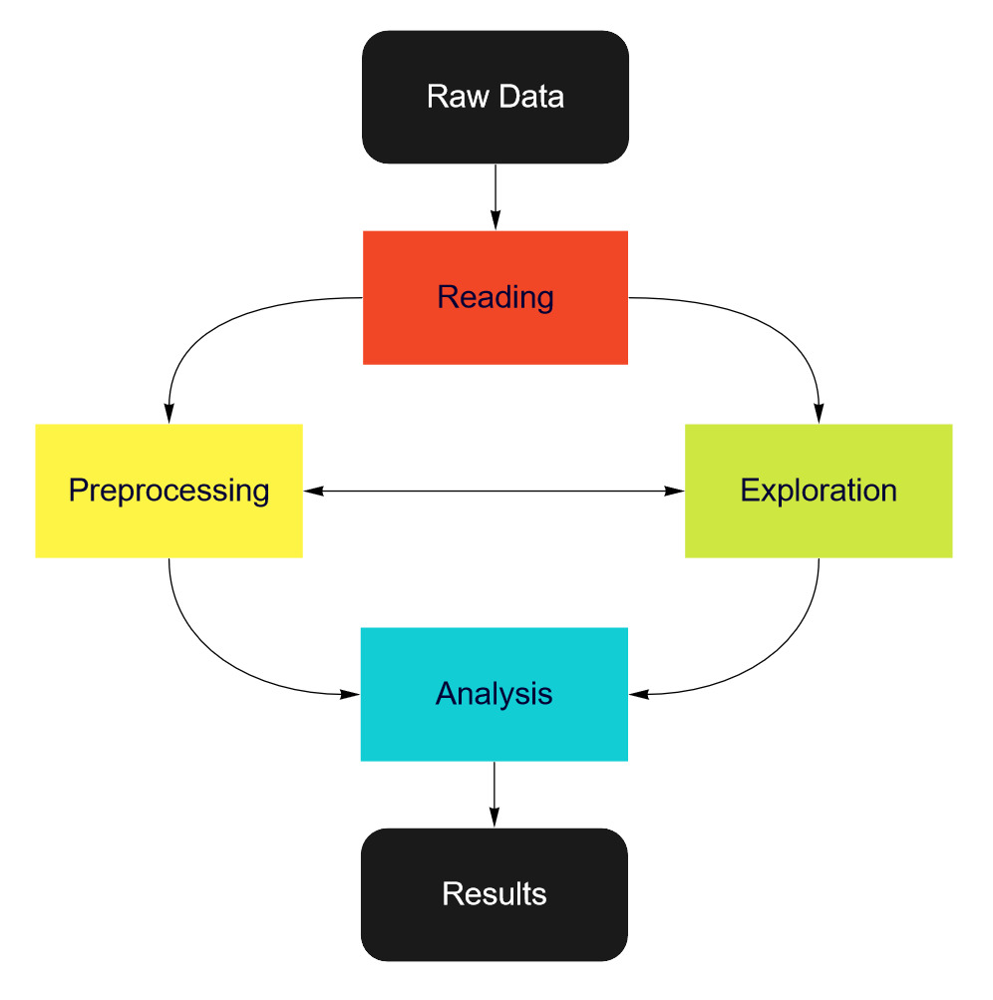

Architecture and workflow
Niimpy toolbox functionality is organized into four layers:
Data Reading
Data Preprocessing
Data Exploration
Data Analysis.
Each layer in implemented as a module. Following table presents the layer properties.
Layer |
Purpose |
|---|---|
Reading |
Read data from the on-disk formats |
Preprocessing |
Prepare data for analysis |
Exploration |
Initial analysis, explorative data analysis |
Analysis |
Data analysis |
Layer: reading
Data is read from the on-disk formats.
Typical input consists of filenames on disk, and typical output is a pandas.DataFrame with a direct mapping of on-disk formats. For convenience, it may do various other small limiting and preprocessing, but should not look inside the data too much.
These are in niimpy.reading.
Layer: preprocessing
After reading the data for analysis, preprocessing can handle filtering, etc. using the standard schema columns. It does not look at or understand actual sensor values, and the unknown sensor-specific columns are passed straight through to a future layer.
Typical input arguments include the DataFrame, and output is the DataFrame slightly adjusted, without affecting sensor-specific columns.
These are in niimpy.preprocessing.
Layer: exploration
These functions can do data aggregation, basic analysis, and visualization which is not specific to any sensor, instead of to the data type.
These are in niimpy.exploration.
Layer: analysis
These functions understand the sensor values and perform analysis based on them.
These are often in modules specific to the type of analysis.
These are in niimpy.analysis.
Workflow
Typical behavioral data analysis workflow consists of following steps:
Data reading -> Preprocessing -> Explorations -> Analysis
Other possible workflows:
Data reading -> Exploration -> Preprocessing -> Analysis
Data reading -> Exploration -> Preprocessing -> Exploration -> Analysis
Niimpy workflow diagram
{kind=link}